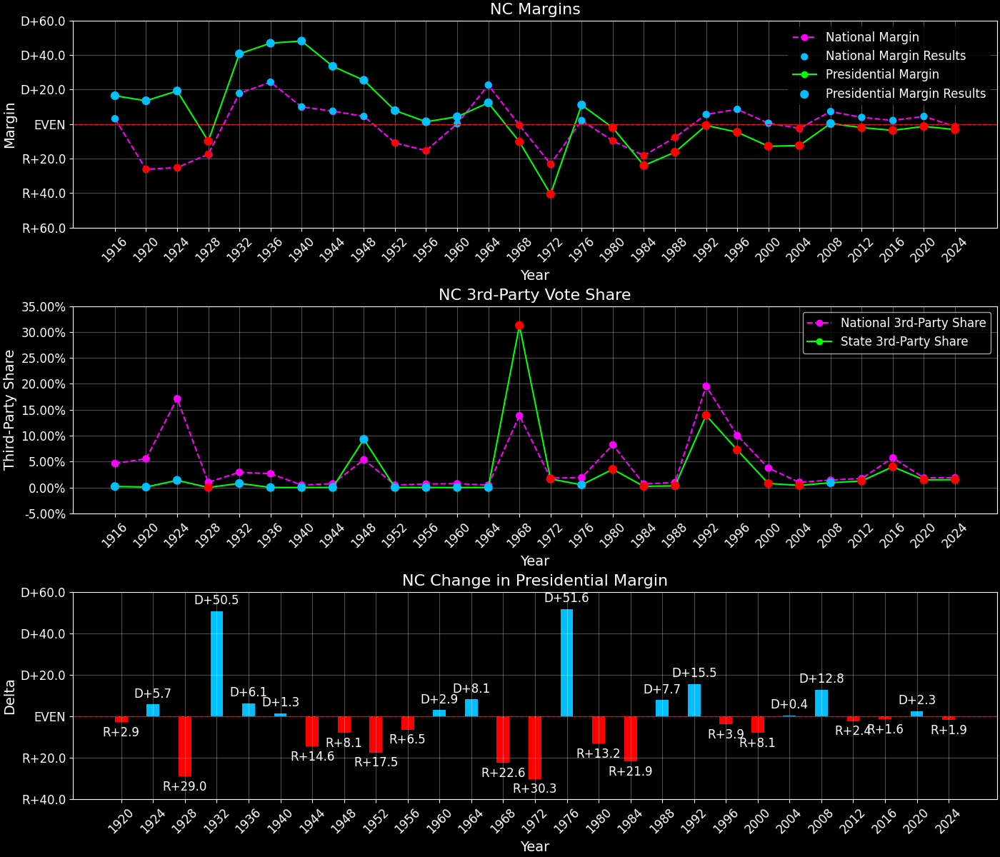

North Carolina (NC) — Statewide
North Carolina (NC) — Statewide

Margins · 3rd-Party share · Pres. deltas

Relative margins · Relative 3rd-Party · Rel. deltas
North Carolina (NC) — Total Data
| Year | D | R | State Margin | Nat. Margin | Rel. Margin | Total votes | EVs |
|---|---|---|---|---|---|---|---|
| 1916 | 168,383(58.1%) | 120,890(41.7%) | D+16.4 | D+3.1 | D+13.3 | 289,837 | 12 |
| 1920 | 305,447(56.7%)(Δ 137,064) | 232,848(43.2%)(Δ 111,958) | D+13.5(Δ R+2.9) | R+26.2(Δ R+29.3) | D+39.6(Δ D+26.4) | 538,741(Δ 248,904) | 12 |
| 1924 | 284,270(58.9%)(Δ -21,177) | 191,753(39.7%)(Δ -41,095) | D+19.2(Δ D+5.7) | R+25.2(Δ D+1.0) | D+44.4(Δ D+4.7) | 482,687(Δ -56,054) | 12 |
| 1928 | 286,227(45.1%)(Δ 1,957) | 348,923(54.9%)(Δ 157,170) | R+9.9(Δ R+29.0) | R+17.4(Δ D+7.8) | D+7.5(Δ R+36.8) | 635,150(Δ 152,463) | 12 |
| 1932 | 497,566(69.9%)(Δ 211,339) | 208,344(29.3%)(Δ -140,579) | D+40.6(Δ D+50.5) | D+17.8(Δ D+35.2) | D+22.9(Δ D+15.3) | 711,501(Δ 76,351) | 13 |
| 1936 | 616,141(73.4%)(Δ 118,575) | 223,283(26.6%)(Δ 14,939) | D+46.8(Δ D+6.1) | D+24.3(Δ D+6.5) | D+22.5(Δ R+0.3) | 839,464(Δ 127,963) | 13 |
| 1940 | 609,015(74.0%)(Δ -7,126) | 213,633(26.0%)(Δ -9,650) | D+48.1(Δ D+1.3) | D+10.0(Δ R+14.3) | D+38.1(Δ D+15.6) | 822,648(Δ -16,816) | 13 |
| 1944 | 527,399(66.7%)(Δ -81,616) | 263,155(33.3%)(Δ 49,522) | D+33.4(Δ R+14.6) | D+7.5(Δ R+2.5) | D+25.9(Δ R+12.2) | 790,554(Δ -32,094) | 14 |
| 1948 | 459,070(58.0%)(Δ -68,329) | 258,572(32.7%)(Δ -4,583) | D+25.3(Δ R+8.1) | D+4.5(Δ R+3.0) | D+20.9(Δ R+5.1) | 791,209(Δ 655) | 14 |
| 1952 | 652,803(53.9%)(Δ 193,733) | 558,107(46.1%)(Δ 299,535) | D+7.8(Δ R+17.5) | R+10.9(Δ R+15.3) | D+18.7(Δ R+2.2) | 1,210,910(Δ 419,701) | 14 |
| 1956 | 590,530(50.7%)(Δ -62,273) | 575,062(49.3%)(Δ 16,955) | D+1.3(Δ R+6.5) | R+15.4(Δ R+4.5) | D+16.7(Δ R+1.9) | 1,165,592(Δ -45,318) | 14 |
| 1960 | 713,136(52.1%)(Δ 122,606) | 655,420(47.9%)(Δ 80,358) | D+4.2(Δ D+2.9) | D+0.2(Δ D+15.6) | D+4.1(Δ R+12.7) | 1,368,556(Δ 202,964) | 14 |
| 1964 | 800,139(56.2%)(Δ 87,003) | 624,844(43.8%)(Δ -30,576) | D+12.3(Δ D+8.1) | D+22.6(Δ D+22.4) | R+10.3(Δ R+14.3) | 1,424,983(Δ 56,427) | 13 |
| 1968 | 464,113(29.2%)(Δ -336,026) | 627,192(39.5%)(Δ 2,348) | R+10.3(Δ R+22.6) | R+0.7(Δ R+23.3) | R+9.6(Δ D+0.7) | 1,587,493(Δ 162,510) | 13 |
| 1972 | 438,705(28.9%)(Δ -25,408) | 1,054,889(69.5%)(Δ 427,697) | R+40.6(Δ R+30.3) | R+23.1(Δ R+22.4) | R+17.4(Δ R+7.9) | 1,518,612(Δ -68,881) | 13 |
| 1976 | 927,365(55.3%)(Δ 488,660) | 741,960(44.2%)(Δ -312,929) | D+11.0(Δ D+51.6) | D+2.1(Δ D+25.2) | D+9.0(Δ D+26.4) | 1,677,906(Δ 159,294) | 13 |
| 1980 | 875,635(47.2%)(Δ -51,730) | 915,018(49.3%)(Δ 173,058) | R+2.1(Δ R+13.2) | R+9.7(Δ R+11.8) | D+7.6(Δ R+1.4) | 1,855,833(Δ 177,927) | 13 |
| 1984 | 824,287(37.9%)(Δ -51,348) | 1,346,481(61.9%)(Δ 431,463) | R+24.0(Δ R+21.9) | R+18.2(Δ R+8.5) | R+5.8(Δ R+13.4) | 2,175,361(Δ 319,528) | 13 |
| 1988 | 890,167(41.7%)(Δ 65,880) | 1,237,258(58.0%)(Δ -109,223) | R+16.3(Δ D+7.7) | R+7.7(Δ D+10.5) | R+8.5(Δ R+2.7) | 2,134,370(Δ -40,991) | 13 |
| 1992 | 1,114,042(42.7%)(Δ 223,875) | 1,134,661(43.4%)(Δ -102,597) | R+0.8(Δ D+15.5) | D+5.6(Δ D+13.3) | R+6.3(Δ D+2.2) | 2,611,850(Δ 477,480) | 14 |
| 1996 | 1,107,849(44.0%)(Δ -6,193) | 1,225,938(48.7%)(Δ 91,277) | R+4.7(Δ R+3.9) | D+8.5(Δ D+3.0) | R+13.2(Δ R+6.9) | 2,515,807(Δ -96,043) | 14 |
| 2000 | 1,257,692(43.2%)(Δ 149,843) | 1,631,163(56.0%)(Δ 405,225) | R+12.8(Δ R+8.1) | D+0.5(Δ R+8.0) | R+13.3(Δ R+0.1) | 2,911,262(Δ 395,455) | 14 |
| 2004 | 1,525,849(43.6%)(Δ 268,157) | 1,961,166(56.0%)(Δ 330,003) | R+12.4(Δ D+0.4) | R+2.5(Δ R+3.0) | R+10.0(Δ D+3.4) | 3,501,007(Δ 589,745) | 15 |
| 2008 | 2,142,651(49.7%)(Δ 616,802) | 2,128,474(49.4%)(Δ 167,308) | D+0.3(Δ D+12.8) | D+7.3(Δ D+9.7) | R+6.9(Δ D+3.0) | 4,310,789(Δ 809,782) | 15 |
| 2012 | 2,178,391(48.4%)(Δ 35,740) | 2,270,395(50.4%)(Δ 141,921) | R+2.0(Δ R+2.4) | D+3.9(Δ R+3.4) | R+5.9(Δ D+1.0) | 4,505,372(Δ 194,583) | 15 |
| 2016 | 2,189,316(46.2%)(Δ 10,925) | 2,362,631(49.8%)(Δ 92,236) | R+3.7(Δ R+1.6) | D+2.1(Δ R+1.8) | R+5.8(Δ D+0.1) | 4,741,564(Δ 236,192) | 15 |
| 2020 | 2,684,292(48.6%)(Δ 494,976) | 2,758,775(49.9%)(Δ 396,144) | R+1.3(Δ D+2.3) | D+4.5(Δ D+2.4) | R+5.8(Δ R+0.0) | 5,524,804(Δ 783,240) | 15 |
| 2024 | 2,715,375(47.6%)(Δ 31,083) | 2,898,423(50.9%)(Δ 139,648) | R+3.2(Δ R+1.9) | R+1.5(Δ R+5.9) | R+1.7(Δ D+4.1) | 5,699,141(Δ 174,337) | 16 |
North Carolina (NC) — Third-Party Data
| Year | D | R | Other votes | State 3rd-Party Share | 3rd-Party Nat. Share | 3rd-Party Rel. Share |
|---|---|---|---|---|---|---|
| 1916 | 168,383(58.1%) | 120,890(41.7%) | 564(0.2%) | 0.19% | 4.64% | -4.45% |
| 1920 | 305,447(56.7%)(Δ 137,064) | 232,848(43.2%)(Δ 111,958) | 446(0.1%) | 0.08% | 5.53% | -5.45% |
| 1924 | 284,270(58.9%)(Δ -21,177) | 191,753(39.7%)(Δ -41,095) | 6,664(1.4%) | 1.38% | 17.14% | -15.76% |
| 1928 | 286,227(45.1%)(Δ 1,957) | 348,923(54.9%)(Δ 157,170) | 0(0.0%) | 0.00% | 0.99% | -0.99% |
| 1932 | 497,566(69.9%)(Δ 211,339) | 208,344(29.3%)(Δ -140,579) | 5,591(0.8%) | 0.79% | 2.94% | -2.16% |
| 1936 | 616,141(73.4%)(Δ 118,575) | 223,283(26.6%)(Δ 14,939) | 40(0.0%) | 0.00% | 2.66% | -2.65% |
| 1940 | 609,015(74.0%)(Δ -7,126) | 213,633(26.0%)(Δ -9,650) | 0(0.0%) | 0.00% | 0.48% | -0.48% |
| 1944 | 527,399(66.7%)(Δ -81,616) | 263,155(33.3%)(Δ 49,522) | 0(0.0%) | 0.00% | 0.72% | -0.72% |
| 1948 | 459,070(58.0%)(Δ -68,329) | 258,572(32.7%)(Δ -4,583) | 73,567(9.3%) | 9.30% | 5.38% | 3.92% |
| 1952 | 652,803(53.9%)(Δ 193,733) | 558,107(46.1%)(Δ 299,535) | 0(0.0%) | 0.00% | 0.49% | -0.49% |
| 1956 | 590,530(50.7%)(Δ -62,273) | 575,062(49.3%)(Δ 16,955) | 0(0.0%) | 0.00% | 0.67% | -0.67% |
| 1960 | 713,136(52.1%)(Δ 122,606) | 655,420(47.9%)(Δ 80,358) | 0(0.0%) | 0.00% | 0.73% | -0.73% |
| 1964 | 800,139(56.2%)(Δ 87,003) | 624,844(43.8%)(Δ -30,576) | 0(0.0%) | 0.00% | 0.48% | -0.48% |
| 1968 | 464,113(29.2%)(Δ -336,026) | 627,192(39.5%)(Δ 2,348) | 496,188(31.3%) | 31.26% | 13.86% | 17.40% |
| 1972 | 438,705(28.9%)(Δ -25,408) | 1,054,889(69.5%)(Δ 427,697) | 25,018(1.6%) | 1.65% | 1.80% | -0.16% |
| 1976 | 927,365(55.3%)(Δ 488,660) | 741,960(44.2%)(Δ -312,929) | 8,581(0.5%) | 0.51% | 1.90% | -1.39% |
| 1980 | 875,635(47.2%)(Δ -51,730) | 915,018(49.3%)(Δ 173,058) | 65,180(3.5%) | 3.51% | 8.24% | -4.73% |
| 1984 | 824,287(37.9%)(Δ -51,348) | 1,346,481(61.9%)(Δ 431,463) | 4,593(0.2%) | 0.21% | 0.67% | -0.46% |
| 1988 | 890,167(41.7%)(Δ 65,880) | 1,237,258(58.0%)(Δ -109,223) | 6,945(0.3%) | 0.33% | 0.98% | -0.66% |
| 1992 | 1,114,042(42.7%)(Δ 223,875) | 1,134,661(43.4%)(Δ -102,597) | 363,147(13.9%) | 13.90% | 19.55% | -5.64% |
| 1996 | 1,107,849(44.0%)(Δ -6,193) | 1,225,938(48.7%)(Δ 91,277) | 182,020(7.2%) | 7.24% | 10.05% | -2.82% |
| 2000 | 1,257,692(43.2%)(Δ 149,843) | 1,631,163(56.0%)(Δ 405,225) | 22,407(0.8%) | 0.77% | 3.75% | -2.98% |
| 2004 | 1,525,849(43.6%)(Δ 268,157) | 1,961,166(56.0%)(Δ 330,003) | 13,992(0.4%) | 0.40% | 1.00% | -0.60% |
| 2008 | 2,142,651(49.7%)(Δ 616,802) | 2,128,474(49.4%)(Δ 167,308) | 39,664(0.9%) | 0.92% | 1.42% | -0.50% |
| 2012 | 2,178,391(48.4%)(Δ 35,740) | 2,270,395(50.4%)(Δ 141,921) | 56,586(1.3%) | 1.26% | 1.73% | -0.48% |
| 2016 | 2,189,316(46.2%)(Δ 10,925) | 2,362,631(49.8%)(Δ 92,236) | 189,617(4.0%) | 4.00% | 5.73% | -1.73% |
| 2020 | 2,684,292(48.6%)(Δ 494,976) | 2,758,775(49.9%)(Δ 396,144) | 81,737(1.5%) | 1.48% | 1.84% | -0.36% |
| 2024 | 2,715,375(47.6%)(Δ 31,083) | 2,898,423(50.9%)(Δ 139,648) | 85,343(1.5%) | 1.50% | 1.88% | -0.38% |

Two-party margins · relative · deltas
North Carolina (NC) — Two-Party Data
| Year | D | R | 2-Party Margin | 2-Party Nat. Margin | 2-Party Rel. Margin | EVs |
|---|---|---|---|---|---|---|
| 1916 | 168,383(58.2%) | 120,890(41.8%) | D+16.4 | D+3.3 | D+13.1 | 12 |
| 1920 | 305,447(56.7%)(Δ 137,064) | 232,848(43.3%)(Δ 111,958) | D+13.5(Δ R+2.9) | R+27.7(Δ R+31.0) | D+41.2(Δ D+28.0) | 12 |
| 1924 | 284,270(59.7%)(Δ -21,177) | 191,753(40.3%)(Δ -41,095) | D+19.4(Δ D+5.9) | R+30.4(Δ R+2.7) | D+49.9(Δ D+8.7) | 12 |
| 1928 | 286,227(45.1%)(Δ 1,957) | 348,923(54.9%)(Δ 157,170) | R+9.9(Δ R+29.3) | R+17.6(Δ D+12.8) | D+7.7(Δ R+42.1) | 12 |
| 1932 | 497,566(70.5%)(Δ 211,339) | 208,344(29.5%)(Δ -140,579) | D+41.0(Δ D+50.8) | D+18.3(Δ D+35.9) | D+22.7(Δ D+15.0) | 13 |
| 1936 | 616,141(73.4%)(Δ 118,575) | 223,283(26.6%)(Δ 14,939) | D+46.8(Δ D+5.8) | D+24.9(Δ D+6.6) | D+21.9(Δ R+0.8) | 13 |
| 1940 | 609,015(74.0%)(Δ -7,126) | 213,633(26.0%)(Δ -9,650) | D+48.1(Δ D+1.3) | D+10.0(Δ R+14.9) | D+38.1(Δ D+16.2) | 13 |
| 1944 | 527,399(66.7%)(Δ -81,616) | 263,155(33.3%)(Δ 49,522) | D+33.4(Δ R+14.6) | D+7.5(Δ R+2.5) | D+25.9(Δ R+12.2) | 14 |
| 1948 | 459,070(64.0%)(Δ -68,329) | 258,572(36.0%)(Δ -4,583) | D+27.9(Δ R+5.5) | D+4.7(Δ R+2.8) | D+23.2(Δ R+2.7) | 14 |
| 1952 | 652,803(53.9%)(Δ 193,733) | 558,107(46.1%)(Δ 299,535) | D+7.8(Δ R+20.1) | R+10.9(Δ R+15.6) | D+18.7(Δ R+4.5) | 14 |
| 1956 | 590,530(50.7%)(Δ -62,273) | 575,062(49.3%)(Δ 16,955) | D+1.3(Δ R+6.5) | R+15.5(Δ R+4.6) | D+16.8(Δ R+1.9) | 14 |
| 1960 | 713,136(52.1%)(Δ 122,606) | 655,420(47.9%)(Δ 80,358) | D+4.2(Δ D+2.9) | D+0.2(Δ D+15.7) | D+4.1(Δ R+12.8) | 14 |
| 1964 | 800,139(56.2%)(Δ 87,003) | 624,844(43.8%)(Δ -30,576) | D+12.3(Δ D+8.1) | D+22.7(Δ D+22.5) | R+10.4(Δ R+14.4) | 13 |
| 1968 | 464,113(42.5%)(Δ -336,026) | 627,192(57.5%)(Δ 2,348) | R+14.9(Δ R+27.2) | R+0.8(Δ R+23.5) | R+14.1(Δ R+3.7) | 13 |
| 1972 | 438,705(29.4%)(Δ -25,408) | 1,054,889(70.6%)(Δ 427,697) | R+41.3(Δ R+26.3) | R+23.6(Δ R+22.8) | R+17.7(Δ R+3.6) | 13 |
| 1976 | 927,365(55.6%)(Δ 488,660) | 741,960(44.4%)(Δ -312,929) | D+11.1(Δ D+52.4) | D+2.1(Δ D+25.7) | D+9.0(Δ D+26.7) | 13 |
| 1980 | 875,635(48.9%)(Δ -51,730) | 915,018(51.1%)(Δ 173,058) | R+2.2(Δ R+13.3) | R+10.6(Δ R+12.7) | D+8.4(Δ R+0.6) | 13 |
| 1984 | 824,287(38.0%)(Δ -51,348) | 1,346,481(62.0%)(Δ 431,463) | R+24.1(Δ R+21.9) | R+18.3(Δ R+7.7) | R+5.7(Δ R+14.1) | 13 |
| 1988 | 890,167(41.8%)(Δ 65,880) | 1,237,258(58.2%)(Δ -109,223) | R+16.3(Δ D+7.7) | R+7.8(Δ D+10.5) | R+8.5(Δ R+2.8) | 13 |
| 1992 | 1,114,042(49.5%)(Δ 223,875) | 1,134,661(50.5%)(Δ -102,597) | R+0.9(Δ D+15.4) | D+6.9(Δ D+14.7) | R+7.8(Δ D+0.7) | 14 |
| 1996 | 1,107,849(47.5%)(Δ -6,193) | 1,225,938(52.5%)(Δ 91,277) | R+5.1(Δ R+4.1) | D+9.5(Δ D+2.6) | R+14.5(Δ R+6.7) | 14 |
| 2000 | 1,257,692(43.5%)(Δ 149,843) | 1,631,163(56.5%)(Δ 405,225) | R+12.9(Δ R+7.9) | D+0.5(Δ R+8.9) | R+13.5(Δ D+1.1) | 14 |
| 2004 | 1,525,849(43.8%)(Δ 268,157) | 1,961,166(56.2%)(Δ 330,003) | R+12.5(Δ D+0.4) | R+2.5(Δ R+3.0) | R+10.0(Δ D+3.5) | 15 |
| 2008 | 2,142,651(50.2%)(Δ 616,802) | 2,128,474(49.8%)(Δ 167,308) | D+0.3(Δ D+12.8) | D+7.4(Δ D+9.9) | R+7.0(Δ D+3.0) | 15 |
| 2012 | 2,178,391(49.0%)(Δ 35,740) | 2,270,395(51.0%)(Δ 141,921) | R+2.1(Δ R+2.4) | D+3.9(Δ R+3.4) | R+6.0(Δ D+1.0) | 15 |
| 2016 | 2,189,316(48.1%)(Δ 10,925) | 2,362,631(51.9%)(Δ 92,236) | R+3.8(Δ R+1.7) | D+2.2(Δ R+1.7) | R+6.0(Δ R+0.0) | 15 |
| 2020 | 2,684,292(49.3%)(Δ 494,976) | 2,758,775(50.7%)(Δ 396,144) | R+1.4(Δ D+2.4) | D+4.5(Δ D+2.3) | R+5.9(Δ D+0.1) | 15 |
| 2024 | 2,715,375(48.4%)(Δ 31,083) | 2,898,423(51.6%)(Δ 139,648) | R+3.3(Δ R+1.9) | R+1.5(Δ R+6.0) | R+1.8(Δ D+4.1) | 16 |